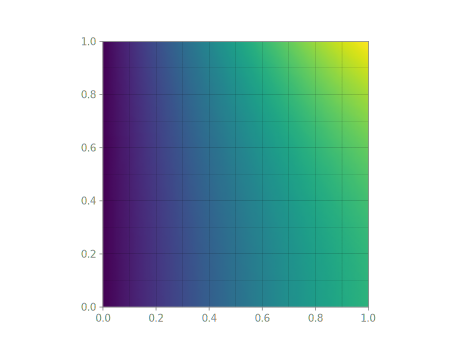

2D Laplace Problem
All of the above was written for a one-dimensional example. We now extend the Laplace problem to two dimensions and highlight the changes to the corresponding Nutils implementation. Let be a unit square with boundary , on which the following boundary conditions apply:
The 2D homogeneous Laplace solution is the field for which for all v, where
Adopting a Finite Element basis we obtain the discrete solution and the system of equations .
Following the same steps as in the 1D case, a unit square mesh with 10x10
elements is formed using nutils.mesh.rectilinear:
nelems = 10
topo, geom = mesh.rectilinear([
numpy.linspace(0, 1, nelems+1), numpy.linspace(0, 1, nelems+1)])
Recall that nutils.mesh.rectilinear takes a list of element vertices per
dimension. Alternatively you can create a unit square mesh using
nutils.mesh.unitsquare, specifying the number of elements per dimension and
the element type:
topo, geom = mesh.unitsquare(nelems, 'square')
The above two statements generate exactly the same topology and geometry. Try
replacing 'square' with 'triangle' or 'mixed' to generate a unit square
mesh with triangular elements or a mixture of square and triangular elements,
respectively.
We start with a clean namespace, assign the geometry to ns.x, create a linear
basis and define the solution ns.u as the contraction of the basis with
argument lhs.
ns = Namespace()
ns.x = geom
ns.define_for('x', gradient='∇', normal='n', jacobians=('dV', 'dS'))
ns.u = topo.field('u', btype='std', degree=1)
ns.v = topo.field('v', btype='std', degree=1)
Note that the above statements are identical to those of the one-dimensional example.
The residual is implemented as
res = topo.integral('∇_k(v) ∇_k(u) dV' @ ns, degree=2)
res -= topo.boundary['right'].integral('v cos(1) cosh(x_1) dS' @ ns, degree=2)
The Dirichlet boundary conditions are rewritten as a least squares problem and
solved for u, yielding the constraints vector cons:
sqr = topo.boundary['left'].integral('u^2 dS' @ ns, degree=2)
sqr += topo.boundary['top'].integral('(u - cosh(1) sin(x_0))^2 dS' @ ns, degree=2)
cons = solver.System(sqr, trial='u').solve_constraints(droptol=1e-15)
# optimize > solve > solving 21 dof system to machine precision using arnoldi solver
# optimize > solve > solver returned with residual 3e-17±2e-15
# optimize > constrained 21/121 dofs
# optimize > optimum value 4.32e-10±1e-9
To solve the problem res=0 for u subject to cons['u'] excluding
the nan values, we use the system's solve method:
args = solver.System(res, trial='u', test='v').solve(constrain=cons)
# solve > solving 100 dof system to machine precision using arnoldi solver
# solve > solver returned with residual 2e-15±2e-15
Finally, we plot the solution. We create a nutils.sample.Sample object from
topo and evaluate the geometry and the solution:
myplot(topo, ns.x, ns.u, args)

This two-dimensional example is also available as the script examples/laplace.py.